地政学
ラプラタ川の北岸で、ブラジルとアルゼンチンの間に位置します。港、政府、大使館、地域機関が集まり、小国外交の慎重さと開放性が街の姿に現れます。水辺の穏やかさの背後で、南米の均衡を支える首都です。港も鍵です。
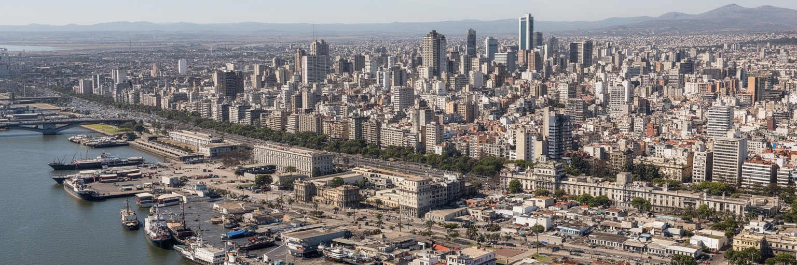
🇺🇾 ウルグアイ / 南アメリカ / World City Atlas
大西洋へ開くラプラタ川の港、国家政治、食肉輸出、金融、カンドンベの太鼓、海岸のランブラが重なる首都です。小国の安定と開放性を支えながら、住宅、雇用、記憶の不均衡も抱えています。
都市の骨格
モンテビデオは、ラプラタ川の湾に港を置き、旧市街、官庁街、海岸住宅地、内陸の労働地区をゆるやかにつなぎます。水辺の穏やかさの奥に、輸出、政治、移民、社会保障の歴史があります。
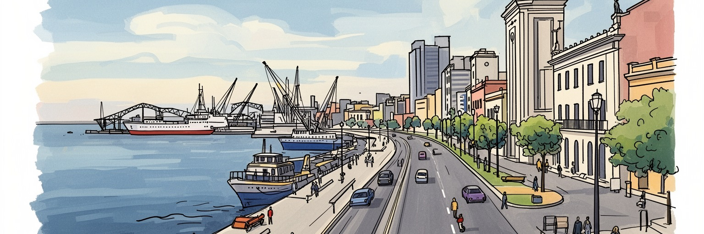
ラプラタ川の北岸で、ブラジルとアルゼンチンの間に位置します。港、政府、大使館、地域機関が集まり、小国外交の慎重さと開放性が街の姿に現れます。水辺の穏やかさの背後で、南米の均衡を支える首都です。港も鍵です。
港湾物流、行政、金融、食肉、乳製品、情報サービス、観光が雇用を支えます。中心部の専門職だけでなく、港湾、倉庫、市場、介護、清掃、バス運転の仕事が都市の毎日を動かし、賃金差も残ります。制度も雇用を支えます。
カトリックの行事に加え、世俗的な市民文化、ユダヤ系移民、アフリカ系のカンドンベ、タンゴ、劇場、文学が重なります。古い移民の記憶と新しいラテンアメリカ移住者の暮らしが、路地と広場に響きます。祝祭も誇りです。
ランブラの散歩、マテ茶、市場、旧市街、浜辺、サッカーが生活と観光を近づけます。一方で中心空洞化、郊外化、非正規居住、治安不安、公共交通の負担もあり、穏やかな首都像だけでは読めません。余暇も観光資源です。
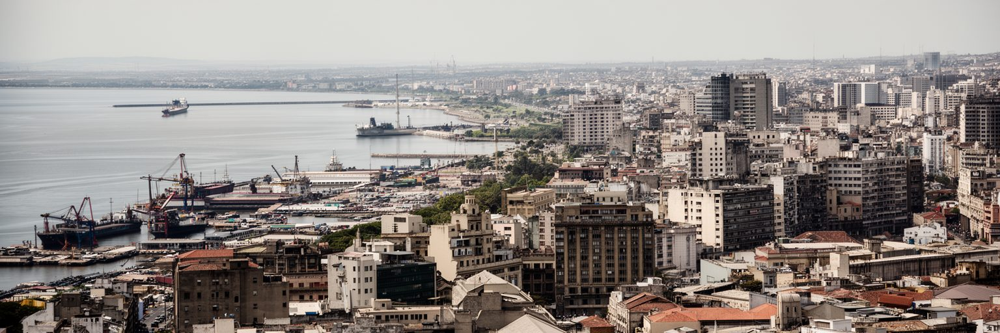
モンテビデオは海の都市に見えますが、正確にはラプラタ川の巨大な河口に面した港湾首都です。湾は自然港として早くから軍事と商業の拠点になり、畜産品、穀物、冷凍肉、コンテナ、燃料、旅客の流れを受け止めてきました。旧市街が突き出した半島に置かれたことも、港を守り、行政と商業を近づけるためでした。港は観光客にはクルーズ船と市場の風景として見えますが、住民にとっては雇用、騒音、トラック交通、倉庫、税関、労働組合の場所でもあります。湾岸の再開発が進むほど、水辺は散歩と投資の舞台になりますが、港湾機能をどこまで中心に残すかという判断も必要になります。モンテビデオの地理を読むには、ランブラの開放感だけでなく、湾奥の物流、旧市街の防御的な形、外洋へ向かう船の経路を重ねる必要があります。川の茶色い水面は、内陸の農牧地と世界市場を結ぶ通路です。都市の穏やかな表情の下には、輸出で生きる国の現実があります。さらに、港は近隣国との競争にもさらされます。ブエノスアイレス、リオグランデ、サントスなどの港と比べながら、ウルグアイは効率、信頼性、税関制度を整える必要があります。港の強さは岸壁だけでなく、道路、鉄道、倉庫、通関、労働条件がどれだけ連動するかで決まります。水辺の眺めは美しくても、その背後には国の物流政策があります。
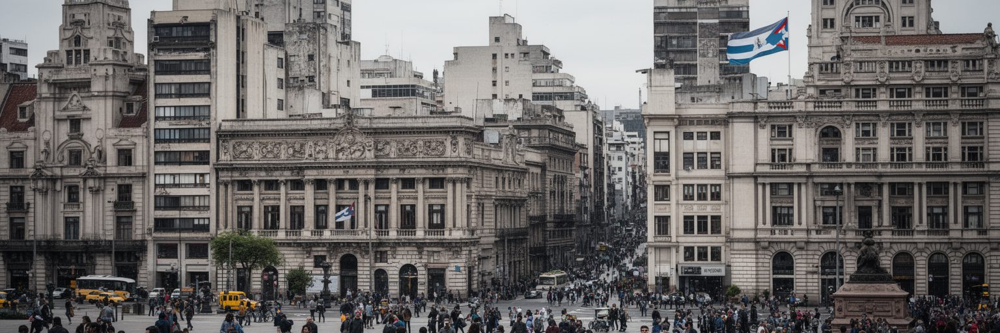
モンテビデオはウルグアイの政府、議会、最高裁、中央銀行、大使館が集まる政治都市です。国土と人口が大きくないため、首都の決定は国内各地の生活へすぐ届き、地方との距離も比較的近く感じられます。街の政治文化は、強い社会保障、労働組合、世俗主義、教育への信頼、軍政の記憶を背景にしています。議会や広場は儀礼の場であると同時に、年金、賃金、住宅、女性の権利、人権、過去の弾圧をめぐる要求が示される場所です。アルゼンチンとブラジルという大国の間にあるため、外交は対立を避けながら開かれた制度を保つ慎重な均衡の技術になります。地域機関や国際会議が置かれることも、小国が規則と対話を重んじる姿勢を示します。観光客には静かな首都に見えても、モンテビデオの街路には民主政治を日常的に使う習慣があります。政治は遠い権力ではなく、広場、組合事務所、大学、新聞、家族の会話を通じて生活へ入ります。軍政期の人権侵害をめぐる記憶も、首都の公共空間に残ります。追悼行進、記念碑、裁判を求める声は、過去を歴史書の中へ閉じ込めません。民主主義の安定は自然に続くものではなく、街路で確認され、学校で教えられ、家族の沈黙を少しずつほどく作業によって保たれます。投票所、労働組合、地域委員会が身近にあることも、政治を生活の延長にしています。今も続きます。
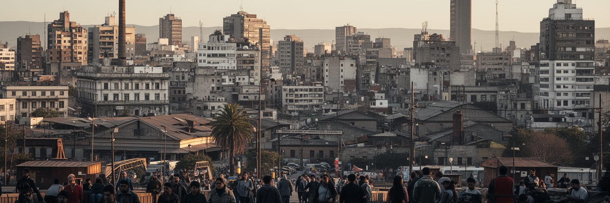
ウルグアイ経済は農牧業の国という印象が強いですが、その価値を国際市場へつなぐ多くの機能はモンテビデオに集まります。食肉、羊毛、乳製品、穀物、木材、セルロースの輸出には、港、検査、金融、保険、法律、情報システム、冷蔵倉庫、運送が必要です。中心部の銀行や行政機関は、内陸の牧場や工場と見えない線で結ばれています。一方、都市の労働はサービス化が進み、公共部門、教育、医療、観光、飲食、清掃、警備、介護、配送が毎日を支えます。安定した制度のある国でも、若者の就職、非正規労働、賃金の伸び悩み、移民労働者の条件は課題です。港湾や市場で働く人、バスを運転する人、海岸沿いの店を支える人がいなければ、首都の静かな生活は保てません。モンテビデオの経済を読むことは、牧草地の輸出収入と都市のサービス労働がどのように結びつくかを見ることです。富は港を通って動きますが、暮らしの安心は職場の条件で決まります。近年はソフトウェア、ビジネスサービス、地域本部機能も重要になっています。小規模な国内市場を越えて働く若者には機会がありますが、英語力、専門教育、住宅費、通信環境の差が参入を分けます。新しい産業の成長も、古い港湾労働や公共部門と切り離さずに見る必要があります。労働市場の安定を保つには、技能訓練と交通の届き方も重要です。
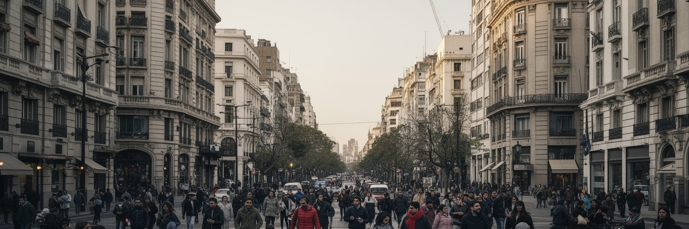
モンテビデオの日常を最もよく表す場所は、海岸沿いに長く続くランブラです。朝のランニング、犬の散歩、釣り、夕方のマテ茶、週末の自転車、家族の会話が同じ水辺に並びます。都心の広場や旧市街が政治と歴史を背負うなら、ランブラは住民が都市を呼吸する公共空間です。ラプラタ川の広い水平線は海のように見え、住民に開放感を与えますが、強い風、冬の湿気、夏の日差しも生活の一部になります。海岸に近い地区は住宅価格が高く、眺めのよい場所へ住める人と、内陸の周辺部から通う人の差もあります。それでもランブラは有料施設ではなく、歩く人、座る人、演奏する人、観光客、学生、高齢者が使える場所です。この公共性はモンテビデオの大きな資産です。都市の豊かさは高層ビルの数だけでなく、誰もが水辺に座れる時間によって測れます。ランブラを歩くと、首都の穏やかさと社会的な差が同時に見えてきます。日常のリズムには、マテ茶の回し飲み、パン屋、近所のバル、バス停での待ち時間も含まれます。生活は派手ではありませんが、公共空間に長く滞在できることが都市への信頼を育てます。水辺が混雑しても、誰かを排除する商業空間になりすぎないことが、首都の親密さを守ります。夕暮れのランブラは、観光地である前に、仕事後の疲れをほどく共同の居間です。その余白が生活を支えます。
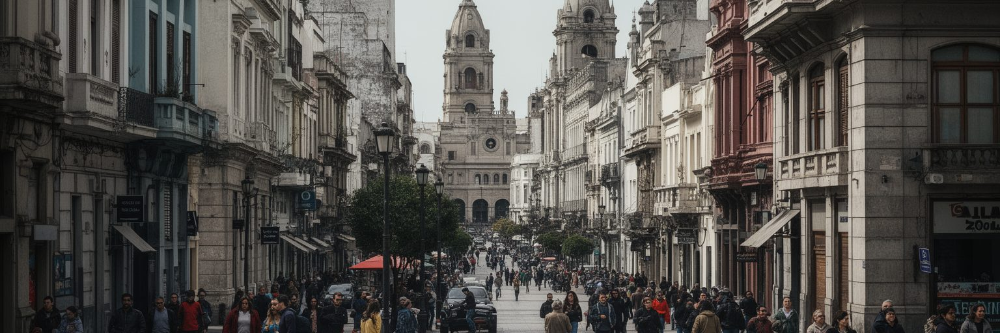
モンテビデオの旧市街は半島状の土地にあり、植民地期の防御、港、行政、商業の都合が街路の形に残っています。独立広場から旧市街へ入ると、劇場、銀行、古い住宅、市場、港湾施設が近い距離で重なり、都市の始まりが港と権力の結びつきだったことが分かります。中心部は歴史的建物を保存しながら、空き家、老朽化、夜間人口の減少、観光化、治安への不安にも向き合っています。郊外へ住宅が広がるほど、旧市街は働きに来る場所、観光する場所、行政手続きの場所になりやすく、日常の住民をどう戻すかが課題になります。内陸側には中層住宅、商店街、工業地、バスターミナル、労働者地区が続き、海岸の優雅な風景とは違う生活の厚みがあります。都市形態を読むときは、旧市街の石畳だけでなく、バス路線、周辺部の住宅、空き地、非正規居住も見なければなりません。モンテビデオは小さな中心を持つ都市ですが、その周囲には階層差と移動の負担が広がっています。保存と再生は、外壁を残すだけでは足りません。学校、診療所、食料品店、夜の安全、手頃な家賃がなければ、歴史地区は生活の場所ではなくなります。観光客が歩く旧市街と、住民が毎日使う旧市街を重ねられるかが、都市再生の質を決めます。中心を住宅地として保つことは、交通負担を減らす環境政策にもなります。都心回帰にも関わります。
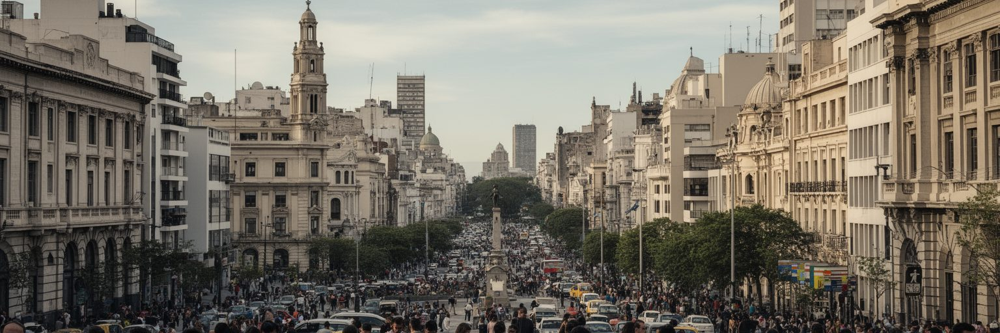
モンテビデオの文化は、スペイン系とイタリア系移民の都市文化、アフリカ系住民のカンドンベ、ユダヤ系移民、近年のラテンアメリカ各地からの移住が重なってできています。ウルグアイは世俗主義が強く、宗教が政治や学校から距離を置く傾向がありますが、カトリックの教会、ユダヤ教会堂、福音派教会、アフロ系儀礼の記憶は街の生活に残ります。カンドンベの太鼓とコンパルサは、奴隷制と差別の歴史を忘れない身体的な記憶であり、祭りや観光だけで消費できるものではありません。タンゴもブエノスアイレスだけの文化ではなく、ラプラタ川を挟んだ都市圏の共有財産としてモンテビデオに息づきます。劇場、書店、大学、カフェ、サッカークラブは、議論好きで市民的な首都文化を支えます。文化を見るには、名物だけでなく、誰の記憶が中心に置かれ、誰の歴史が周辺に追いやられてきたかを考える必要があります。太鼓の音、教会の鐘、劇場の拍手は、移民とアフリカ系の経験を含む都市の多声性を伝えます。近年のベネズエラ、キューバ、ドミニカ共和国などからの移住も、飲食店、言葉、音楽、労働市場に新しい層を加えています。移民都市としての歴史は過去だけではなく、現在も続いています。公共文化が開かれているかどうかは、新しく来た人が広場、学校、職場、祭りに参加できるかで分かります。
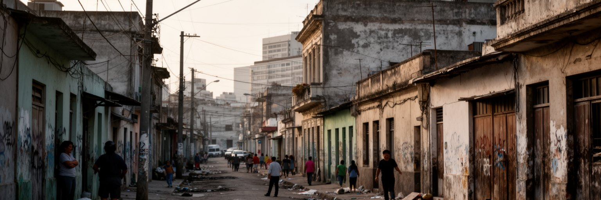
モンテビデオは南米の中では比較的安定した生活環境を持つ都市ですが、住宅と社会問題は軽くありません。海岸沿いの良好な地区と、内陸や周辺部の低所得地区では、住宅の質、交通、学校、医療、雇用へのアクセスに差があります。非正規居住や老朽住宅は、単なる景観の問題ではなく、所得、家族構成、移民、若者の就労、公共サービスの届き方を反映します。中心部では古い建物の空洞化や家賃負担があり、周辺部では通勤時間とバス費用が生活を圧迫します。治安不安が語られるときも、犯罪だけを切り離すのではなく、失業、教育からの離脱、薬物、家庭内暴力、孤立を含めて見る必要があります。一方で、協同組合住宅や公共政策、市民団体の活動は、住まいを市場任せにしない文化を育ててきました。モンテビデオの穏やかさは、問題がないことではなく、問題を公共的に扱う制度と習慣があることに支えられています。住宅を読むことは、誰が海に近く住み、誰が遠くから都市を支えるかを読むことです。住宅協同組合の伝統は、住民が設計、資金、管理に関わる別の都市づくりを示します。それでも土地価格や建設費が上がれば、制度だけでは追いつきません。若い世帯、高齢者、単身者、移民が中心部に住み続けられるかは、都市の包摂力を測る重要な尺度です。住まいの安定は、学校、仕事、近所づきあいを続ける基盤でもあります。
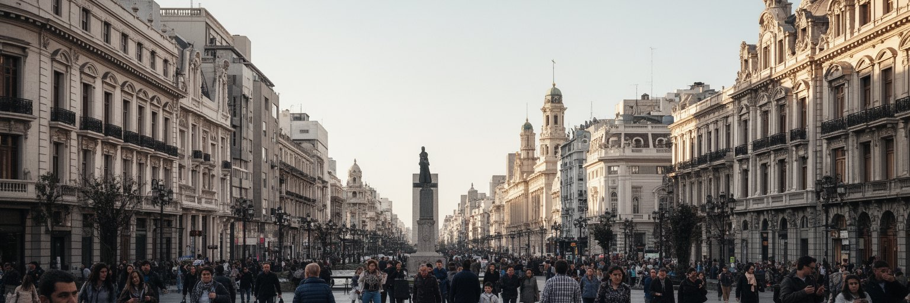
モンテビデオ観光は、旧市街、独立広場、ソリス劇場、港市場、ランブラ、海岸の住宅地、サッカーの記憶をゆっくり結ぶ体験です。巨大な観光都市のように名所を急いで消費するより、広場で人の動きを見て、マテ茶を持つ住民の歩き方に合わせるほうが都市の性格を理解できます。港市場は食肉文化の象徴ですが、観光化によって日常の市場から外食の舞台へ変わる面もあります。旧市街の建物はヨーロッパ移民の都市形成を伝えますが、同時にアフリカ系住民や労働者の歴史も重ねて読む必要があります。海岸の夕景、劇場、カーニバル、サッカーは魅力的ですが、それらを支える警備、清掃、交通、飲食、文化労働も観光の一部です。クルーズ客が短時間で通る都市であるほど、消費が地元の店や住民にどう届くかが重要になります。モンテビデオの遺産は、派手な記念碑だけでなく、歩ける水辺、保存された劇場、労働の市場、太鼓の行進にあります。観光は静かな首都の奥行きを知る入口です。加えて、観光の速度が遅いこと自体がこの都市の魅力です。長い昼食、夕方の散歩、劇場前の待ち合わせ、日曜市の会話は、短いチェックリストでは拾えません。訪問者が住民の時間を尊重できるほど、観光は都市の生活を壊さずに支える力になります。小さな店や地域の案内人に収益が届く仕組みも大切です。とても大切です。
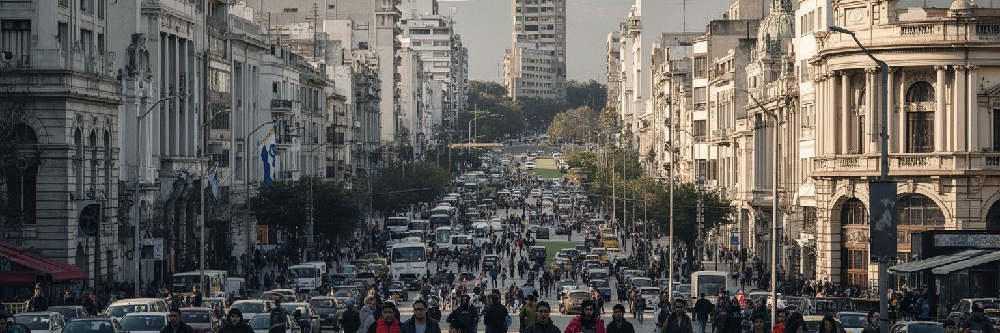
モンテビデオを語るうえで、サッカーは単なる娯楽ではありません。ウルグアイ代表の歴史、クラブの対立、地区の帰属意識、家族の週末、ラジオ中継、街角の会話がサッカーを公共文化にしています。小さな国が世界大会で大きな存在感を示してきた記憶は、首都の誇りと結びつきます。スタジアムは観光名所である前に、労働者地区、移民家族、若者、売店、警備、交通が集まる社会空間です。勝敗の熱狂は都市を一つに見せますが、クラブごとの階層、地区、政治的な記憶もあります。サッカー文化は男性中心に語られがちですが、女性の観戦、女子サッカー、家族連れ、地域クラブの育成も都市の日常を広げています。スポーツは社会統合の力を持つ一方、暴力、差別、過度な商業化への対策も欠かせません。モンテビデオでは、広場やバスの中でも試合の話題が生活をつなぎます。サッカーを読むことは、国民的な神話だけでなく、地区ごとの居場所、世代の記憶、公共空間の使われ方を読むことです。クラブのユニフォームは、家族の記憶や近所の誇りを持ち歩く印でもあります。試合の日には交通、警備、露店、放送、飲食店が同時に動き、都市の非公式な経済も活発になります。スポーツの熱は、公共秩序と地域の喜びをどう両立させるかという都市管理の課題も映します。育成年代のクラブは、子どもが地域に居場所を持つための社会施設でもあります。
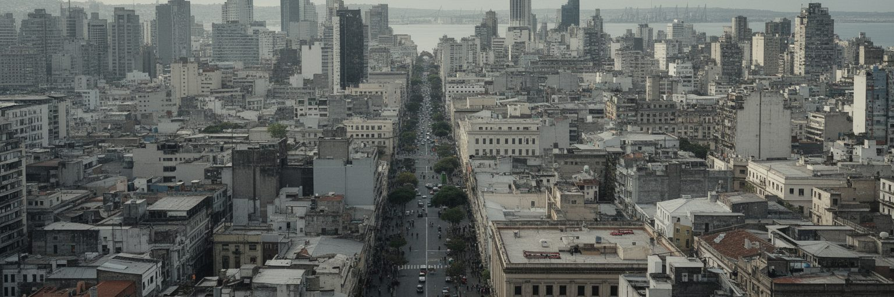
モンテビデオの気候は温暖で、海風が強く、四季の差はあるものの極端な寒暖は比較的少ない都市です。しかし、気候リスクが小さいわけではありません。ラプラタ川沿いの高潮、強風、海岸侵食、排水、夏の熱波、干ばつ時の水供給は、都市管理の重要な課題です。近年の水不足は、首都の生活が遠くの貯水、河川流域、農業、エネルギー、気候変動に依存していることを示しました。ランブラの美しさは、護岸、砂浜、道路、公共空間を維持する継続的な仕事に支えられています。古い住宅では断熱や換気の弱さが暑さ寒さを増幅し、低所得世帯ほど水道料金、冷暖房、修繕の負担を受けやすくなります。環境政策は景観保全だけでなく、誰が安全な住宅に住み、誰が水不足の影響を受けやすいかを扱う社会政策でもあります。モンテビデオを水辺の美しい首都として見るなら、その水がどこから来て、どの地区を守り、どの地区を危険に残すのかも見なければなりません。海岸の公共空間は観光資源であると同時に、防災の最前線でもあります。排水路、街路樹、日陰、避難情報、貯水の多様化は、派手ではありませんが生活を守ります。気候への備えが公平であるほど、ランブラの開放感は将来にも残ります。水質管理とごみ処理も、港湾都市の信頼を左右する基本的な仕事です。環境教育も市民の日常に必要です。
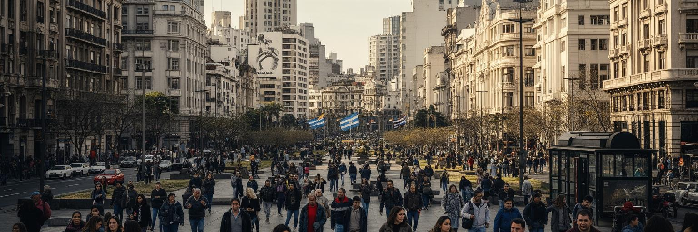
モンテビデオは、巨大な人口や超高層の金融街で圧倒する都市ではありません。むしろ、港、議会、大学、劇場、旧市街、ランブラ、サッカースタジアム、労働地区が近い距離で結ばれ、小国の制度と生活を見通せる点に特徴があります。南米の大国にはさまれながら、ウルグアイは安定した民主政治、世俗的な公共文化、社会保障、教育、移民の記憶を育ててきました。その多くは首都の広場、学校、組合、新聞、カフェ、家庭の会話に現れます。一方で、穏やかなイメージだけでは、住宅格差、若者の就労難、非正規居住、治安不安、中心部の空洞化、気候と水のリスクを見落とします。モンテビデオを読むことは、都市の規模ではなく、公共空間の質と社会契約の厚みを見ることです。港から世界へ出る輸出、ランブラに座る住民、太鼓を鳴らす行列、議会前の抗議、旧市街の空き家は、すべて同じ都市の一部です。静かな首都の強さは、矛盾を完全に消すことではなく、街路と制度の中で扱い続ける姿勢にあります。この都市では、国家の大きな物語と日々の小さな習慣が近い距離にあります。マテ茶を持つ散歩、港のクレーン、組合の旗、劇場の灯り、サッカーの歓声は、経済、政治、文化を別々にしません。モンテビデオの魅力は、その結びつきが過度に演出されず、住民の時間の中で自然に見えるところにあります。